Before You Start
This workbook goes with the The App Factory course. One idea per page
section, a recap and a short quiz after every lesson. All businesses,
people and figures are invented. Anything about the future is marked
Vision 2029 · Illustrative.
Published by Puppy Classroom App Studio. No income promises. Results
depend on your own work.
M00 · What Is An App Factory
What An App Is Made Of, The Road, Rooms And Gates
What every app is built from, why most apps are made by hand, and the
road of 9 stages, 11 rooms and gates that every idea travels in the
factory.
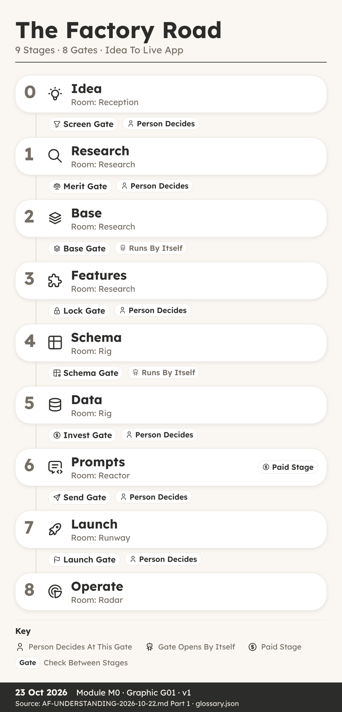
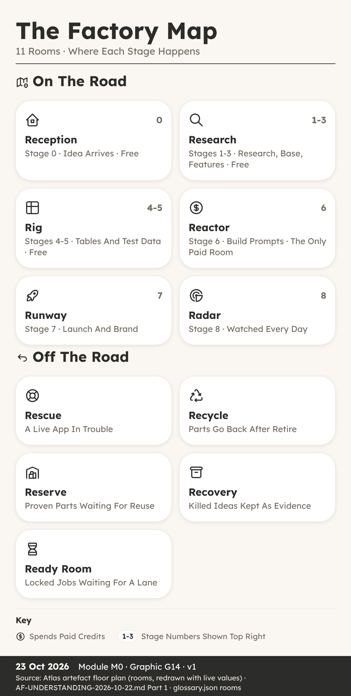
What An App Is Made Of
You can: name the four things every app is made of
and explain why a factory reuses tested parts.
Key Ideas
- Ava, A Blank Page And Four Things. Ava is thirteen
and helps on Saturdays at The Tidy Paw, a dog grooming salon run by Juno
Platt.
- Screens Are What People See. A screen is one page
of an app that a person looks at and touches, such as a calendar, a form
or a list.
- Tables Hold The Data In Rows. A table is where an
app stores its data, laid out in rows and columns, rather like a
spreadsheet.
- Rules Decide Who Sees What. A rule decides who may
see something and who may change it.
- People: Who Uses The App. Every app has different
kinds of people using it, and each kind needs different screens and
different rules.
- Most Apps Are Built By Hand. Someone starts from a
blank page, invents the screens, the tables and the rules from nothing,
and makes hundreds of choices along the way.
- A Factory Reuses Tested Parts. Every idea travels
the same road, in the same order, with the same checklist at each
step.
- Ava’s Plan Before Building. Ava now has a plan
before she builds anything.
Recap
- Screens Show And Collect Information
- Tables Store Data In Rows And Columns
- Rules And Walls Decide Who Sees What
Why It Matters: Name The Four Parts Before You Build
Anything
Quick Quiz
What is a table in an app?
- A page that people tap
- Where data is stored in rows and columns
- A rule about prices
- A kind of screen for staff
In this course, what is a leak?
- A slow screen
- A missing booking
- Someone seeing data that is not theirs
- A spelling mistake on a page
What is kit K00?
- The floor that every app gets
- A kit for selling products
- A kit only for big apps
- The last kit to be added
Why is building every app by hand a problem when you want many
apps?
- Hand-made apps cannot have screens
- Hand-made apps have no tables
- Hand-made apps are always free
- Lessons from one app are not carried to the next
My Notes
________________________________________
________________________________________
The Road, Rooms And Gates
You can: name the 9 stages, describe the 11 rooms
and say which gates need a person to decide.
Key Ideas
- Sam Wanted It Done By Sunday. One weekend he had an
idea for a small app to help his gran keep track of her dog’s walks and
feeding times, and he wanted it finished by Sunday night.
- Nine Stages, Numbered 0 To 8. In the factory, every
idea travels the same road of nine stages, numbered 0 to 8.
- Free Stages, One Card, One Document. Two things
make this road easy to follow.
- Six Rooms On The Main Road. A room is simply where
an app sits while it is at a certain stage, so anyone can see at a
glance what is happening.
- Five Rooms Beside The Road. The other five rooms
sit beside the road.
- Eight Gates On The Main Road. A gate is a stop
point where the app must prove its stage is finished before it may move
on.
- A Person Decides At Some Gates. Some gates open by
themselves when every check passes.
- After Launch, Three Lap Gates. A live app goes
round a lap, and three lap gates watch it.
Recap
- Nine Stages Run From 0 Idea To 8 Operate
- Eleven Rooms Show Where Each App Sits
- Gates Stop Apps, A Person Decides At Some
Why It Matters: A Fixed Road Catches Mistakes Before
Real People Do
Quick Quiz
How many stages are on the factory road?
- Seven
- Eight
- Nine, numbered 0 to 8
- Eleven
Which is the only stage that spends build credits?
- Stage 1, Research
- Stage 6, Prompts
- Stage 4, Schema
- Stage 8, Operate
Which of these gates opens by itself when every check passes?
- Lock
- Launch
- Merit
- Schema
What does the Slot check inside Invest make sure of?
- No more than 3 builds at once, with 1 lane kept for rescues
- The app has a logo
- The price is set
- Every screen has a colour
My Notes
________________________________________
________________________________________
M01 · Stage 0 · Idea
The Idea Form, The 20 Codes, The Kill Check
How an idea enters the factory through the Idea Form, how the 20
codes describe it, and how the kill check, verdict, data role and Screen
gate decide whether work starts.
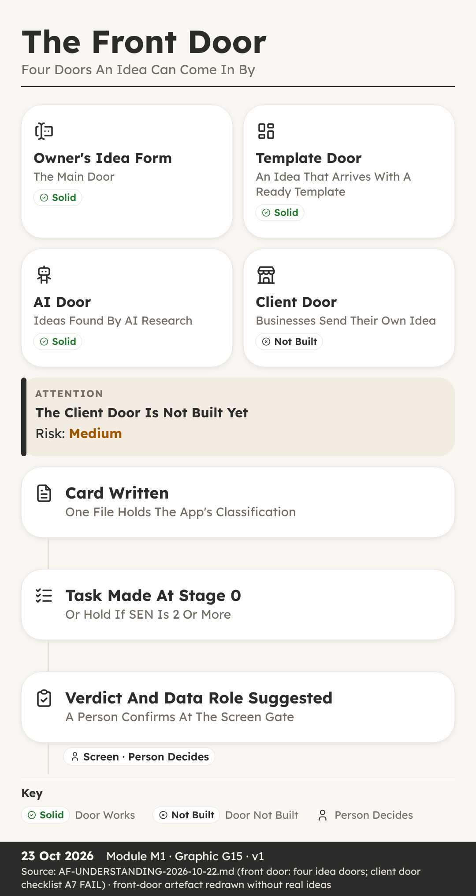
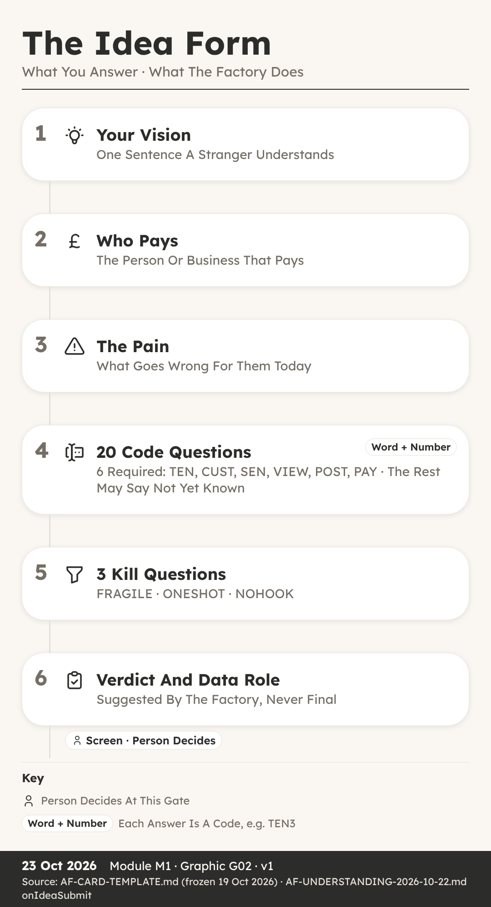
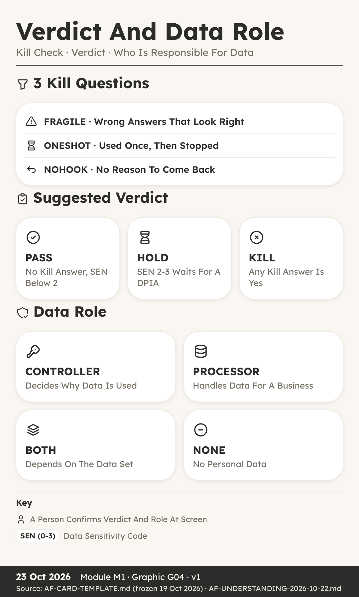
You can: write an idea as a one-line vision, a named
payer and a clear pain, and name the four doors ideas come through.
Key Ideas
- Two Pages Nobody Could Follow. Isla’s aunt, Mara
Quill, breeds dogs and holds a dog breeding licence from her local
council.
- Stage 0 Starts In Reception. Every idea begins at
Stage 0, called Idea, in a room called Reception.
- Four Doors Bring Ideas In. The first is the Idea
Form, filled in by a person with an idea.
- Vision: What The App Is. It opens with a short name
and a vision.
- Who Pays: Name The Payer. This means the person or
business whose money keeps the app running, not just who uses it.
- Pain: The Problem In Plain Words. The pain is the
problem the app removes, written the way the customer would say it.
- What Happens When You Submit. When the form is
sent, the factory engine does five things at once.
- The Card Is Never Overwritten. The card is the
single home of the idea’s classification.
Recap
- Start With Vision, Who Pays And Pain
- Ideas Arrive Through Four Doors
- The Card Is Kept, Never Overwritten
Why It Matters: Three Short Answers Beat Two Pages
Of Features
Quick Quiz
What three things does the brief on the Idea Form ask for?
- Colours, logo and name
- What it is, who pays and the pain
- Price, launch date and domain
- Screens, tables and rules
Which of the four idea doors is not built yet?
- The Idea Form
- The flip farm
- The AI door
- The client door
What is a reseller?
- A business that sells the app to its members under its own name
- A person who tests the app
- A rival product
- A kind of table
What happens when a card needs to change?
- The old card is deleted
- The card is overwritten
- A new version, such as v2, is saved beside it
- The idea starts again with a new name
My Notes
________________________________________
________________________________________
The 20 Codes
You can: name the 4 code groups, read a code as a
word plus a number and say which 6 codes are required.
Key Ideas
- Rory Meets TEN, CUST And SEN. Rory is twelve and
was helping his sister fill in the Idea Form for Litterline.
- Twenty Codes In Four Groups. A code is a short name
for one question about how the app handles businesses, people and
data.
- Each Answer Is A Word Plus Number. Every answer is
a word plus a number.
- Group 1: Businesses. TEN (0-6) asks how many
businesses use the app and who sits above them.
- Group 2: Who Signs In. ROLE (0-2) asks whether all
of a business’s staff have the same access, or different roles with
different access.
- Group 3: Customers. CUST (0-5) asks how far into a
business’s own customers the app goes.
- Group 4: Public. VIEW (0-2) asks whether a stranger
can read anything without signing in.
- Six Required, Fourteen Can Wait. Six codes are
required, because the factory cannot judge an idea without them: TEN,
CUST, SEN, VIEW, POST and PAY.
Recap
- 20 Codes Sit In 4 Groups
- Each Answer Is A Word Plus A Number
- Six Required, Fourteen May Be Not Yet Known
Why It Matters: The Codes Decide Which Walls The App
Needs
Quick Quiz
How many groups are the 20 codes sorted into?
- 2
- 3
- 4
- 5
Which six codes must always be answered?
- TEN, CUST, SEN, VIEW, POST and PAY
- ROLE, JOIN, HELP, GUEST, BELONG and SHARE
- PRICE, BRAND, SEND, EXIT, POOL and MEET
- Any six you choose
What does SEN 3 mean?
- Ordinary data
- Personal data
- Health or clinical data
- Data about children
What does a question mark mean as an answer to one of the 14
optional codes?
- The answer is zero
- Not yet known
- The code does not apply
- The idea is killed
My Notes
________________________________________
________________________________________
Kill Check, Verdict And Data
Role
You can: apply the three kill questions, work out
the suggested verdict, name the four data roles and explain the Screen
gate.
Key Ideas
- Leo’s Idea Stopped At Stage 0. Leo had an idea he
loved: a version of Trimtable that would make one neat printed price
list for a grooming salon.
- Three Kill Questions. The kill check is three
questions, each with a code name.
- Any Yes Suggests KILL. If any one of the three
answers is yes, the suggested verdict is KILL.
- High SEN (0-3) Means HOLD. The engine suggests HOLD
when SEN, the sensitivity code, is 2 or 3.
- PASS: No Kill, SEN Below 2. An idea passes when no
kill answer is yes and SEN is below 2, meaning the data is ordinary or
personal, but not health and not children.
- Data Roles: Who Is Responsible. Alongside the
verdict, the engine suggests a data role.
- The Role Picks The Duty Lines. Each role brings its
own pack of checklist lines that the app must complete later.
- The Screen Gate: Start Work. Now the idea reaches
its first gate: Screen, between Stage 0 and Stage 1.
Recap
- Three Kill Questions: FRAGILE, ONESHOT, NOHOOK
- HOLD When SEN (0-3) Is 2 Or More
- Data Role: CONTROLLER, PROCESSOR, BOTH Or NONE
Why It Matters: Stopping A Weak Idea At Stage 0
Costs Nothing
Quick Quiz
Which kill question asks whether people would use the app once
and stop?
- FRAGILE
- NOHOOK
- ONESHOT
- SEN
No kill answer is yes, but SEN is 3. Which verdict does the
engine suggest?
- PASS
- HOLD
- KILL
- GO
What does a PROCESSOR do?
- Decides why personal data is used
- Holds no personal data
- Sells the app under its own name
- Handles personal data on behalf of another business
Which idea can never pass the Screen gate automatically?
- An idea where a kill is suggested
- An idea with SEN 1
- An idea from the Idea Form with no flags
- An idea with a short name
My Notes
________________________________________
________________________________________
M02 · Stage 1 · Research
The Research Sweep, The Merit Gate
How the free research sweep checks rivals, customer words, gaps,
market size and the rules, and how a person decides at the Merit gate
whether the idea is worth building.
The Research Sweep
You can: list the parts of the research sweep and
explain why customers’ own words come before our own ideas.
Key Ideas
- Esme Expected Charts, Owners Wanted Logs. Esme’s
neighbour runs Hollin Lane Kennels, a boarding kennel.
- First, Check What We Already Own. Once an idea
passes Screen, it moves to Stage 1, Research, in the room of the same
name.
- The Competitor Sweep: 3-5 Rivals. A competitor, or
rival, is any product people already use to solve the same problem.
- Customer Words, Exactly As Written. This means 10
exact phrases people use for the pain, and 10 for the result they want,
copied from reviews and groups word for word.
- The Gap Matrix Finds Our Edge. With rivals and
customer words in hand, we build a gap matrix.
- Market Size, Trend And Lawful Data. Market size
means roughly how many possible customers there are, and the trend means
whether that number is growing or shrinking.
- The Rules Flag Warns The Gate. Then comes the rules
flag, short for the regulatory flag.
- Rank: Market, Profit, Risk, Confidence. Finally,
everything is pulled together into an idea code and a rank.
Recap
- Check What We Already Own First
- Collect Rivals, Reviews And Customers’ Exact Words
- Gap Matrix, Market, Rules Flag, Then Rank
Why It Matters: Customers’ Own Words Beat Our Own
Guesses
Quick Quiz
Which reviews does the competitor sweep look at most closely?
- 5 star reviews
- 4 star reviews
- 3 star reviews
- 1 and 2 star reviews
How many exact customer phrases are collected for the pain?
- 3
- 5
- 10
- 20
What does the gap matrix end with?
- The 3 strongest gaps
- A finished app
- A price list
- A list of test accounts
Who completes the rules flag?
- An AI tool on its own
- A person, because judging the law needs a human
- The first customer
- Nobody, it is optional
My Notes
________________________________________
________________________________________
The Merit Gate
You can: explain the four Merit verdicts as a
decision tree, say why a person decides and describe the DPIA hold.
Key Ideas
- Ruby Wanted Yes, Got RESHAPE. Ruby is fourteen and
had followed Litterline all the way through research.
- Merit Asks: Is It Worth Building. Merit is the gate
between Stage 1, Research, and Stage 2, Base.
- Why A Person Decides At Merit. Because Merit is the
regulatory and data protection kill.
- Four Verdicts As A Decision Tree. Merit gives one
of four verdicts: GO, HOLD, KILL or RESHAPE.
- RESHAPE Changes, HOLD Waits. RESHAPE means the idea
is worth something, but one part must change first.
- KILL At Merit Goes To Recovery. It burns the id,
which means that number is never handed to another idea.
- The DPIA Hold For High SEN. There is one special
hold to know about.
- GO Must Be Carried And Written. When the verdict is
GO, it must be carried.
Recap
- Merit Asks: Is It Worth Building
- GO, HOLD, KILL Or RESHAPE, As A Decision Tree
- SEN (0-3) At 2 Or More Needs A DPIA
Why It Matters: A Person Judges The Law Before
Anything Is Built
Quick Quiz
What question does the Merit gate ask?
- Start work on this idea?
- Freeze the feature list?
- Is it worth building?
- Open it to real users?
At Merit you can name exactly what must change. Which verdict
fits?
- GO
- KILL
- HOLD
- RESHAPE
Why does RECYCLE never apply at Merit?
- No parts have been built yet
- Merit is automatic
- RECYCLE costs too much
- The card is deleted at Merit
What does the rule “a move writes, or it did not happen”
mean?
- Every app needs a writer
- The verdict must be written to the card and register in the same
session
- The idea must be written twice
- Only written ideas can enter Reception
My Notes
________________________________________
________________________________________
M03 · Stage 2 · Base
Picking A Base, Bricks, Shelves And Kits
How the factory picks a proven base to start from, and the bricks,
shelves and kits every app is assembled from.
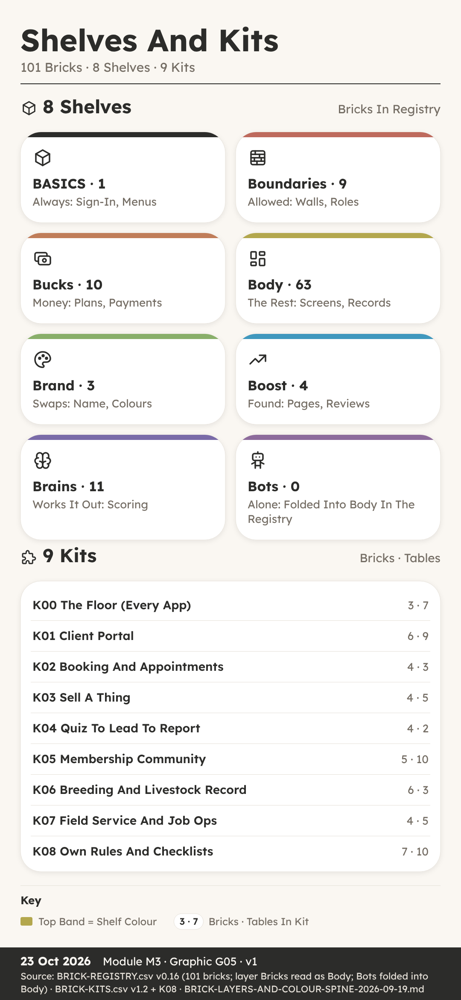
Picking A Base
You can: explain how the factory picks a base,
copies the template and passes the Base gate.
Key Ideas
- Starting From Nothing Is Slow. He had an idea for a
booking desk for dog groomers, a bit like our sample app Trimtable, and
it had just passed the Merit gate.
- Stage 2 Is Called Base. Stage 2 in the factory is
called Base.
- Remix Or Rebuild. To remix means to start from an
existing base app that the factory already owns, kept on a shelf of
bases, and change it.
- The Dedup Check Looks For Twins. Dedup is short for
de-duplication, which means removing copies.
- Copy The Template, Then Save A Backup. Next, the
factory clones the template app folder.
- Bricks, Kits And Colours Listed Once. A brick is
one reusable part, such as booking or invoices, and a kit is a named
bundle of bricks that ship together.
- A Security Vet With Two Accounts. A base can look
fine and still leak.
- The Base Gate Opens By Itself. It is an auto gate,
which means no person has to click yes.
Recap
- Remix An Owned Base Or Rebuild As BESPOKE
- Dedup Check And Export ZIP Come First
- Base Gate Is Auto Once Base Named And Vetted
Why It Matters: A Proven Base Means Only New Parts
Get Built
Quick Quiz
What does it mean to remix at Stage 2?
- Start fresh with a blank project
- Start from an existing base the factory owns
- Copy another company’s app
- Skip the Base stage
What must come with a decision to rebuild as BESPOKE?
- A dedup check that proved nothing suitable exists
- A paid build prompt
- A finished sales page
- A signed letter from the club
Who moves the app through the Base gate?
- A person always clicks yes
- The customer
- The engine, automatically, when every line is done
- The reseller club
Why is an Export ZIP taken as soon as the base is chosen?
- To send it to customers
- To make the app faster
- To publish the app
- To keep a safe copy to go back to
My Notes
________________________________________
________________________________________
Bricks, Shelves And Kits
You can: explain what bricks, shelves and kits are,
and why K00 sits under every app.
Key Ideas
- Sixty Loose Parts, Half Of Them Repeats. Isla was
planning Litterline, our sample licence and records hub for dog
breeders.
- A Brick Is One Reusable Part. A brick is one
reusable part of an app that does one job.
- Eight Shelves On A Colour Spine. Bricks sit on
shelves, and the shelves are sorted on a colour spine, which is a fixed
order where each shelf has its own colour.
- Most Bricks Live In Body. If you count the
registry, the shelves are not even.
- A Kit Is A Named Bundle. A kit is a named bundle of
bricks that ship together, so one idea is picked as one thing with a
known cost, not as fifteen loose picks.
- K00 Is The Floor Under Every App. It is called the
floor, and it is forced onto every app.
- Litterline Picks Four Kits. It uses K00, the floor,
like every app.
- Kits First, Then Loose Bricks. Kits do not stop you
adding single bricks.
Recap
- A Brick Is One Reusable Part With An Id
- 101 Bricks Sit On 8 Colour Spine Shelves
- 9 Kits K00-K08, With K00 Under Every App
Why It Matters: Named Kits Turn Loose Wishes Into A
Clean List
Quick Quiz
How many bricks are in BRICK-REGISTRY v0.16?
- 88
- 101
- 63
- 20
What is K00?
- An optional booking kit
- A kit only for resellers
- A retired kit
- The floor, forced onto every app
Which three bricks make up K00?
- BR-BASICS, BR-TENANCY and BR-LEGAL
- BR-BOOKING, BR-FORMS and BR-DOCS
- BR-PEDIGREE, BR-CLINICAL and BR-LITTERS
- BR-REVIEWS, BR-GALLERY and BR-CHAT
Why does the Body shelf hold the most bricks?
- Body bricks are cheaper
- Body is the only free shelf
- The registry files bot bricks under Body
- Every kit lives on Body
My Notes
________________________________________
________________________________________
M04 · Stage 3 · Features
Kits And Bricks, Who Sees What, Duties, The Lock Gate
How the first version of an app is scoped, mapped and mocked up, how
its duties are listed, and how the Lock gate freezes the feature
list.
Choosing Kits And Bricks
You can: describe how the first version of an app is
scoped, mapped and mocked up before Lock.
Key Ideas
- Sam Wanted Everything In Version One. Sam was
helping to plan Stayproof, our sample inspection pack for boarding
kennels.
- Stage 3 Picks What Goes In. Stage 3 is where the
bricks and kits from Stage 2 become a real feature list.
- Who Sees And Does What. It has one line for each
role and each action.
- Every Word And Colour Is Data. Every word, label,
colour and category the app shows is listed and stored as rows in a
table, never typed into the code.
- Payment Route And Tenancy Level. The third and
fourth notes are about money and businesses.
- The Launch-Minimum Scope. It is the fewest tables
and screens that let a first customer pay and use the app.
- A Clickable Mockup, Phone First. Before anything is
built, the app gets a clickable mockup.
- Journeys Are Part Of The Design. One more thing
goes into Stage 3: a journey map.
Recap
- Five Notes Go In The Build Pack Before Lock
- Launch-Minimum Means Fewest Screens A Customer Pays For
- Clickable Mockup Phone First, Built From The Research
Why It Matters: Small And Clear Beats Big And
Untested
Quick Quiz
What is the launch-minimum scope?
- Every feature a customer could ever want
- The fewest tables and screens that let a first customer pay and use
it
- The sales page
- The list of rivals
Why are words, labels and colours stored as data?
- So a brand swap is an edit to rows, not a paid build turn
- To make the app slower
- Because code cannot hold words
- So customers can change the code
Where should a who-sees-and-does-what check happen?
- Only on the screen
- In the sales page
- In the customer’s email
- On the server side, where the data is held
What must the first build include, by the checklist rule?
- A chat room
- Every rival feature
- The top three complaints fixed and one thing no rival has
- A shop
My Notes
________________________________________
________________________________________
Duties And The Lock Gate
You can: explain the obligations ledger and what
must be true before the Lock gate freezes the feature list.
Key Ideas
- A List Everyone Liked. Ava and her mum were
planning Trimtable, our sample booking desk for dog groomers, with a
salon called The Tidy Paw in mind.
- Duties Come From A Shared Ledger. A duty, or
obligation, is something that must exist or be done before a stage or a
paid build can go ahead.
- The App Gets Its Own Ledger. At Stage 3 the app
gets its own obligations ledger, section 3.7 of its document.
- Some Duties Belong To One Person. Some rows can
only be done by a person, not an agent.
- Open Duties Block The Gate. Here is the rule that
gives the ledger its teeth.
- Named Payer And A Legal Check. The Lock gate sits
between Stage 3 and Stage 4, and it has two firm conditions.
- A Person Always Decides At Lock. There is a reason
it is always a person.
- After Lock, The App Becomes Real. Lock is also the
moment the app is created on the build platform, with its own number and
a short web name called a slug.
Recap
- Every App Gets Its Own Obligations Ledger
- Open Duties Due At A Gate Block It
- Lock Needs A Named Payer, Legal Check And Yes
Why It Matters: Freezing The List Stops Drift And
Surprise Costs
Quick Quiz
What is OBLIGATIONS.csv?
- A list of rival apps
- The app’s price list
- A shared file of duties keyed to what causes them
- The sales page
What happens when a ledger row due at a gate is still open?
- The gate cannot pass
- The gate passes with a warning
- The row is deleted
- The app is retired
Which two conditions does the Lock gate need?
- A sales page and a domain
- Two test accounts
- A paid prompt and a refund
- A named payer and a legal check
What happens to the out list after Lock?
- Its items join automatically next week
- It is closed, and items return only through a new gate
- It is sent to customers
- It becomes the sales page
My Notes
________________________________________
________________________________________
M05 · Stage 4 · Schema
Tables And Columns, Access Modes, Walls, Table Tests
How the codes and kits decide an app’s tables, how each table is
built, set and recorded, and how the walls are tested before the Schema
gate.
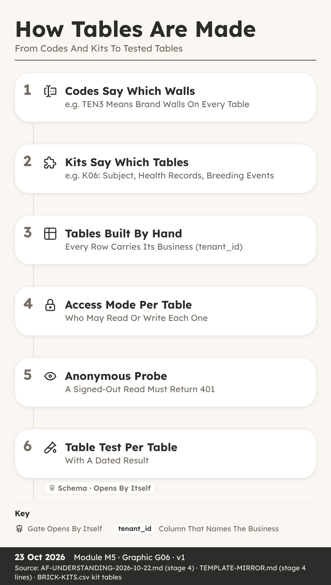
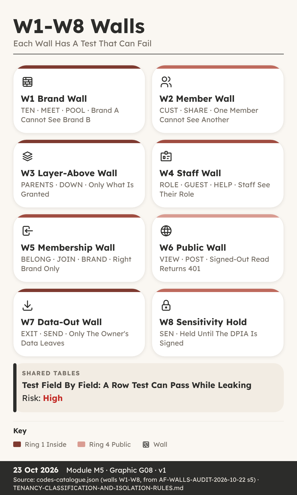
How The System Makes The
Tables
You can: explain how codes and kits decide the
tables, and how each table is built, set and recorded.
Key Ideas
- Nia Thought Tables Were Easy. Nia keeps the
spreadsheet for her family’s walking group, so when she heard Stage 4
was about tables, she thought it would be easy.
- A Schema Is The Plan Of Tables. A schema is the
plan of the tables that hold the data: which tables exist, which columns
each one has, and who may read or write them.
- Codes And Kits Decide The Tables. The kits chosen
earlier each bring their own tables.
- A Spec First, Then Built By Hand. Before anything
is created, the tables and columns are written out as a spec, short for
specification, saved as a CSV file.
- Access Modes Say Who Can Read. Every table has an
access mode, a setting that says who may read and write its rows.
- Probe Every Table While Signed Out. Deciding a mode
is not the same as having it.
- Every Table Gets A Register Row. The last piece is
the table register, section 4.0 of the app’s document.
- Never Rename, Add And Migrate Instead. One rule
from the duties file is worth learning by heart.
Recap
- Kits Bring The Tables, Codes Shape The Columns
- Set Access Mode At Creation, Then Probe Signed Out
- Every Table Gets A 4.0 Register Row And Reason
Why It Matters: Tables Planned Once Are Cheap, Fixed
Later Are Not
Quick Quiz
What is a schema?
- The sales plan
- The plan of the tables that hold the data
- A type of brick
- The launch checklist
Why is the access mode set when a table is created?
- Because it looks tidier
- Because the customer asks for it
- Because only resellers can change it
- Because setting it then is free and changing it later is a billed
turn
What does an anonymous probe do?
- Sends a test request with nobody signed in
- Deletes old tables
- Renames columns
- Sends emails to customers
What is the safe way to change a column name?
- Rename it directly
- Delete the table
- Add a new column, migrate the data, leave the old one unread
- Ask customers to type the data again
My Notes
________________________________________
________________________________________
Walls And Table Tests
You can: name the eight walls and describe the table
tests that must pass before the Schema gate.
Key Ideas
- Seeing Someone Else’s Clients. One morning, the
booking app the salon used showed her another salon’s client list, names
and phone numbers included.
- A Wall Keeps Two Parties Apart. In the factory, a
wall is a rule that keeps two parties’ data apart.
- The Eight Walls W1-W8. The full set has eight
walls, numbered W1-W8, and most codes on the idea card point to
one.
- Each Table Gets The Right Test. Stage 4 ends with
table tests, section 4.4 of the document.
- A 401 Means Not Allowed In. 401 is a status code, a
number a web server sends back with every answer.
- Shared Tables Need Field-Level Tests. Imagine one
dog’s record that two breeders both hold a claim on, with each allowed
to see different fields.
- Every Test Has A Dated Result. A test without a
result is just a hope.
- The Schema Gate Passes By Itself. When every Stage
4 checklist line is done, and no section of the document still says
pending, the engine moves the app on without anyone clicking yes.
Recap
- Eight Walls W1-W8 Keep Parties Apart
- Brand-Wall, User-Wall And Anonymous 401 Table Tests
- Shared Tables Need Field-Level Tests, Then Auto Schema Gate
Why It Matters: A Test That Can Fail Is The Only
Proof
Quick Quiz
Which wall keeps one business’s data away from another
business?
- W1 Brand Wall
- W6 Public Wall
- W7 Data-Out Wall
- W8 Sensitivity Hold
What should an anonymous read of a control table return?
- 200 with rows
- A list of tenants
- 401
- The sales page
Why is a row-level test not enough on a shared table?
- Shared tables have no rows
- It is too slow
- Shared tables are always public
- A shared row has no tenant id, so the test can pass while fields
leak
Who moves the app through the Schema gate?
- A person always clicks yes
- The engine, automatically, when every line is done
- The customer
- The reseller club
My Notes
________________________________________
________________________________________
M06 · Stage 5 · Data
Test Identities, Test Tenants, The Leak Test Plan
How the last free stage gets an app ready for a paid build: two
contrasting test brands, named test members, a test plan with negative
cases, a credit estimate and the Invest gate.
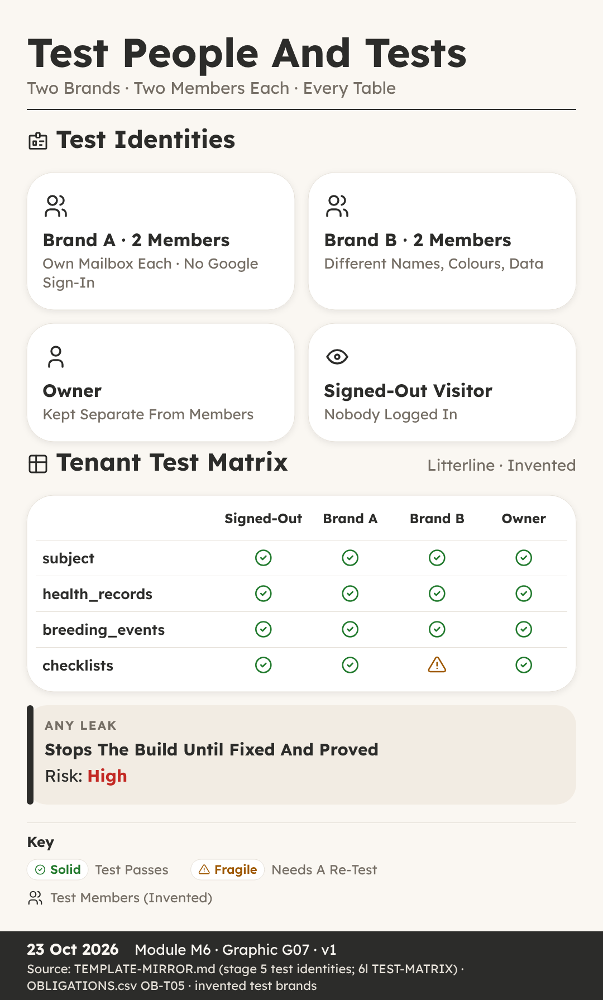
Test Identities And Test
Tenants
You can: explain why every app needs two contrasting
test brands and named test members before any paid build starts.
Key Ideas
- One Salon Cannot Prove A Wall. He is fourteen, and
he was helping to test Trimtable, the booking and client desk for dog
groomers.
- Stage 5 Is The Last Free Stage. It happens in the
room called Rig, the same room where the tables were built by hand in
Stage 4.
- Two Test Tenants, Never Just One. A tenant is one
business that uses the app, with its own name and its own data.
- Make The Two Brands Look Different. That word comes
straight from the duty list: the second tenant gets different names,
different lanes and different colours, so that a leak is visible.
- Test Rows Must Be Easy To Find. On the build
platform, the preview version of the app and the live version share one
database.
- Two Test Members For Every Brand. A test identity
is a pretend person with a real sign-in, used only for testing.
- No Google Sign-In, No Agent Accounts. First, no
Google single sign-on for test members.
- Walk It As A Brand-New Person. One last step comes
before any build: the new-account walk.
Recap
- Two Contrasting Test Tenants Make A Leak Visible
- Two Test Members Per Brand, Each With Own Mailbox
- No Google Sign-In, And Agents Never Create Accounts
Why It Matters: A Test That Cannot Fail Proves
Nothing
Quick Quiz
Why does Stage 5 need at least two test tenants?
- Two tenants make the app load faster
- One tenant cannot prove that data stays behind its wall
- The build platform charges less for two tenants
- The sales page needs two brand names
What makes the two test tenants contrasting?
- They use the same colours so tests are fair
- They share one owner account
- They use the same dog names
- Different names, lanes and colours
How do test members sign in?
- With an email and password or a magic link, each with their own
mailbox
- With the owner’s Google account
- With single sign-on through any account
- With one shared team login
Who sets up the test identities?
- An AI agent, during the build
- Any test member who needs one
- The factory owner, once per app, by hand
- The first paying customer
My Notes
________________________________________
________________________________________
The Leak And Tenant Tests
You can: describe a test plan with negative cases,
read a test matrix and explain what the Invest gate decides.
Key Ideas
- Her Checklist Only Tested Success. She wrote a
checklist to test Stayproof, the inspection pack for boarding kennels,
using Hollin Lane Kennels as her example.
- One Row Per Test, With Its Negative. In Stage 5 the
factory writes a test plan.
- The Test Matrix: Every Table, Four Visitors. The
tests are laid out as a test matrix.
- A Leak Stops The Build. A leak is when someone can
see or change data that belongs to somebody else.
- Tests Are Written Before The Prompts. The leak
tests are written now, in Stage 5, together with the build prompts,
before a single credit is spent.
- The Credit Estimate And The Stop Rule. The factory
estimates how many credits the build will take and writes it on the
app’s card as the word credits, then a number.
- The Invest Gate (5-6) And Slot Check. Stage 5 ends
at the Invest gate, from 5 to 6.
- Ready For The Paid Stage. So when Stage 5 closes,
the app has two contrasting test brands, named test members, a test plan
with a negative case on every row, and a test matrix covering every
table for four kinds of visitor.
Recap
- Every Test Row Carries Its Negative Case
- Matrix Covers Every Table For Four Kinds Of Visitor
- Invest Passes Itself At 1,500 Credits Or Less
Why It Matters: Tests Written First Cannot Bend To
Fit Results
Quick Quiz
What is a negative case?
- A test that always passes
- A test of the sales page wording
- A test that checks something forbidden really fails
- A test that is only run on a phone
Which four kinds of visitor does the test matrix cover?
- Owner, reseller, customer and builder
- Signed out, Brand A member, Brand B member and owner
- Desktop, phone, tablet and laptop
- Breeder, groomer, kennel and club
What happens when a leak is found during the build?
- It is noted for a later version
- Only the owner is told
- The leak status stays as not tested
- The build stops
When does the Invest gate pass by itself?
- When the estimate is 1,500 credits or less and the month’s stop line
is not passed
- Whenever the test plan is written
- When two test members exist
- Never, the owner always decides
My Notes
________________________________________
________________________________________
M07 · Stage 6 · Prompts
One Surface Per Prompt, The Walls Block, Tests After Every Paid
Turn
How the only paid stage works: small build prompts that carry their
own tests and rollback step, the six steps after every paid turn, and
the Send gate.
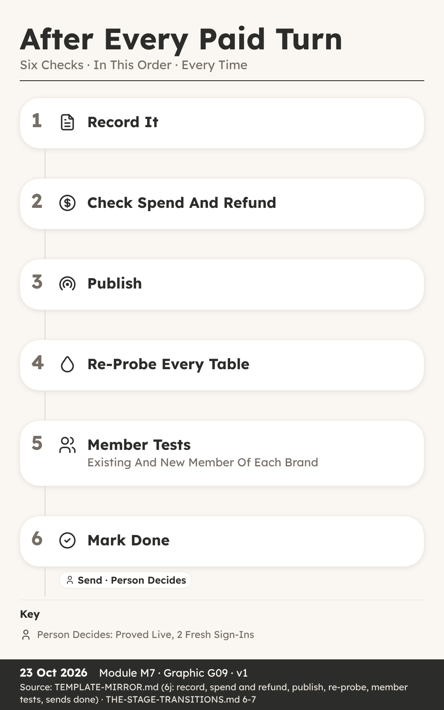
How Build Prompts Are
Written
You can: list what every paid build prompt must
carry and explain why each prompt does only one job.
Key Ideas
- One Request, Two Jobs, Big Risk. He was watching
his dad plan a change to Trimtable for Juno Platt’s salon, The Tidy
Paw.
- Stage 6 Is The Only Paid Stage. It happens in the
room called Reactor, and it is the only paid stage in the whole
factory.
- One Goal, One Surface. The first rule is one goal,
one surface.
- The Blocks Every Prompt Carries. A context block
lists exactly which files the builder may read, and nothing else.
- Each Prompt Carries Its Own Test. Where the app has
brands, the test covers both walls: the brand wall, where Brand B cannot
see Brand A, and the member wall, where one member cannot see another
member’s rows.
- A Rollback Step For Every Prompt. Each paid prompt
also carries a written rollback step.
- The Go Word And The Sends List. Before any prompt
goes out, the factory writes a three-line pre-send report and adds a
task to a list called Sends.
- Small, Tested And Reversible. So a good build
prompt is small, tested and reversible.
Recap
- One Goal, One Surface: An And Means Two
- Walls Block, Test And Rollback In Every Prompt
- Owner Gives The Go Word Before Each Paid Send
Why It Matters: Small Prompts Fail Small And Undo
Easily
Quick Quiz
Why is Stage 6 different from every other stage?
- It is the only stage with a gate
- It is the only stage that uses tables
- It is the only stage run by the customer
- It is the only stage that spends credits
What does the rule ‘an and means two prompts’ mean?
- A request with two jobs is split into two prompts
- Every prompt must be sent twice
- Two people must write each prompt
- Each prompt must name two brands
What does fail closed mean in the walls block?
- The app shuts down at night
- Failed prompts are deleted
- When in doubt, the app refuses access
- The builder closes every file it opens
Who runs the tests a prompt carries?
- The AI builder, inside its own turn
- The factory’s agents, from outside the app, after the turn
- The first real customer
- Nobody, the builder’s screen is enough
My Notes
________________________________________
________________________________________
After Every Paid Turn
You can: put the six after-turn steps in order and
explain what the Send gate needs before an app moves on.
Key Ideas
- Done On Screen Is Not Done. The builder’s screen
said the new litter page was done, and Ava wanted to message Mara Quill,
the breeder waiting for it, straight away.
- Six Steps, Always In This Order. After every paid
turn, the factory follows six steps, always in the same order.
- Step One: Record On Landing. Step one is record on
landing, and it happens before any check, test or reply.
- Step Two: Spend And Refund Check. Step two compares
what the turn cost with the written estimate.
- Steps Three And Four: Publish, Then Probe. Step
three is publish, which puts the new version on the live site.
- Step Five: Member Tests On Both Brands. After every
paid turn, an existing member and a brand-new member of each brand do
the app’s core action from start to finish.
- The Send Gate (6-7): Proved Live. Step six marks
the send as done, and a scorecard is written: what was predicted against
what actually happened.
- Done Means Proved Live. So here is the lesson in
one line: done means proved live from outside.
Recap
- Record First, Before Any Check Or Reply
- Publish, Then Probe Every Table Signed Out
- Send Gate Needs Proof Live And Two Fresh Sign-Ins
Why It Matters: A Turn Is Only Done When Proved
Live
Quick Quiz
What is the first step after every paid turn?
- Publish the new version
- Record the prompt and reply word for word
- Run the member tests
- Tell the customer it is ready
A file the prompt named did not change after the turn. What does
the rule say?
- Send the same prompt again at once
- Ignore it if the screen looks fine
- Change the file by hand and move on
- The turn failed, so raise a refund ticket and do not resend
blind
Why does the factory check the live code before testing?
- A cache can still be showing the old version
- The builder asks it to
- Live code is cheaper to test
- Testing before publishing is not allowed by law
What does the Send gate need before the app moves to Launch?
- A finished sales page
- A full month of real users
- Proved live, with two fresh sign-ins
- A new domain name
My Notes
________________________________________
________________________________________
M08 · Stage 7 · Launch
Sales Page, Domain, Funnels, The Launch Walk, The Launch
Gate
How an app meets the outside world: a sales page, a domain,
ClickFunnels funnels, a plan carried safely from the landing page, the
launch tests and the Launch gate.
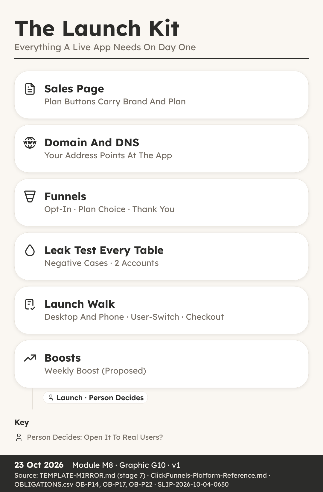
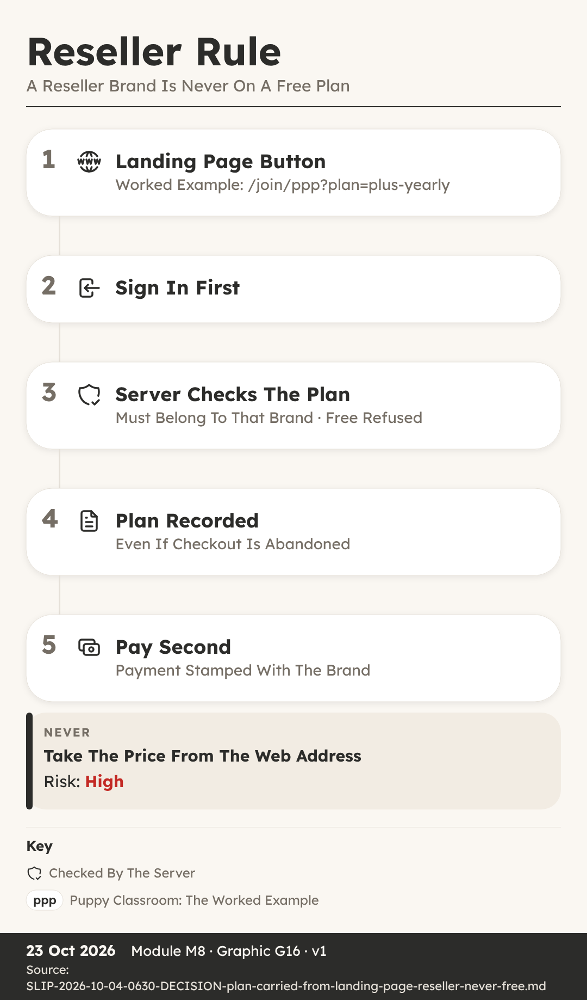
Sales Page, Domain And
Funnels
You can: explain what a domain, DNS and a funnel
are, and why a reseller’s brand is never on a free plan.
Key Ideas
- A Free Button That Was Refused. He was helping to
put together a page for Northvale Canine Society, the club that resells
Litterline to its members under its own name.
- Stage 7 Happens On The Runway. It happens in the
room called Runway, which is tagged Brand, because this is where the app
meets the outside world under each brand’s name.
- The Sales Page And Launch Price. The sales page
explains what the app does, who it is for and what it costs.
- Domain And DNS In Plain Words. A domain is the name
of a website, the words people type to find it.
- Funnels Lead People Step By Step. A funnel is a
short series of pages that leads a visitor from a first look to signing
up or paying.
- ClickFunnels Holds Contacts, Not The Keys. The
simplest route is a built-in connection that sends sign-ups and tags
across.
- The Plan Travels With The Click. Each button on a
landing page carries both the brand and the plan inside its link.
- A Reseller Brand Is Never Free. Free is decided per
brand offer, never for the whole app.
Recap
- DNS Points The Domain At The App
- The Link Carries Brand And Plan, Never Price
- A Reseller Brand Is Never On A Free Plan
Why It Matters: Every Click Must Land On A Recorded,
Checked Plan
Quick Quiz
What does DNS do?
- It designs the sales page
- It takes payments at checkout
- It points a domain name at the server where the app lives
- It tests every table for leaks
What does a landing page button carry inside its link?
- The brand and the plan
- The price and a discount
- The member’s password
- A ClickFunnels key
Why is the price never taken from the web address?
- Web addresses are too short
- Prices change every day
- ClickFunnels does not allow it
- Anyone can edit a web address
Which brands may offer a free plan?
- Every brand, including resellers
- The factory owner’s own brands, never a reseller’s
- Only reseller brands
- No brand, ever
My Notes
________________________________________
________________________________________
The Launch Walk And Boosts
You can: name the checks that come before the Launch
gate and explain why the weekly boost is still only proposed.
Key Ideas
- It Worked On The Laptop. She tried the new
Stayproof site on her laptop, signing up as a brand-new kennel worker,
and everything worked.
- Leak Test Every Table, Two Accounts. Before launch,
the leak check runs one last time, and it is strict.
- The Launch Walk, Desktop And Phone. Before the
gate, a brand-new account for each brand walks the whole journey on the
live site, on desktop and on phone, including email links opened on the
phone.
- The User-Switch Test. Then comes the user-switch
test, a standard check on every app.
- Checkout Tested On The Live Link. Checkout is
tested on the live link with a 100 percent off test code: buy, sign in,
and get access.
- Support Route, Then The Launch Gate (7-8). The
support route is tested too, so a real person with a problem can
actually reach help.
- Weekly Boost: Proposed, Not A Rule. The factory’s
template has a weekly boost line: a weekly proposal of ways to help the
app get found, using parts from the Boost shelf, such as public pages,
reviews, search visibility and funnels.
- Ready For Real Users. So before an app opens to
real users, it passes a leak test on every table with two accounts, a
launch walk on desktop and phone, a user-switch test, a live checkout
test, legal and consent checks and a tested support route.
Recap
- Leak Test Every Table With Two Accounts
- Walk The Journey New, On Desktop And Phone
- The Owner Always Decides The Launch Gate (7-8)
Why It Matters: Real Users Deserve An App Proved On
Every Path
Quick Quiz
Why does the launch walk include a phone?
- Phones are faster to test on
- The sales page is only shown on phones
- Phones never need a sign-in
- Email links opened on a phone can break a journey that works on
desktop
What does the user-switch test check?
- That two users can share one account
- That user B sees none of user A’s name or settings in the same
browser
- That users can switch brands freely
- That the owner can sign in as anyone
Why is checkout tested on the live link?
- Checkout never works in preview
- The live link is free to use
- Preview has no buttons
- The test code only works on phones
What is the status of the weekly boost?
- A gate the owner must pass
- A rule that runs every day
- Proposed, not yet a rule
- Retired and no longer used
My Notes
________________________________________
________________________________________
M09 · Stage 8 · Operate
Watching Every Day, The Money Line, Rescue, Retire And
Recycle
How a live app is watched every day, judged by one money line each
month, and rescued, retired or recycled when the time comes.
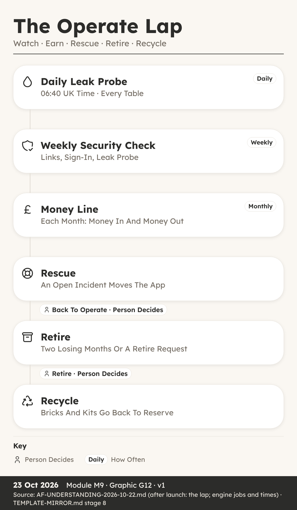
Watching A Live App Daily
You can: explain the daily, weekly and monthly
checks that watch a live app, and when each one runs.
Key Ideas
- A Live App Is Not Finished. Isla spent weeks
helping a team launch Litterline, the licence and records hub for dog
breeders.
- Stage 8 Is Called Operate. Stage 8 is Operate, and
its room is called Radar.
- The Engine Refreshes Every 15 Minutes. The engine
is a script, which means a small program that runs on a timer and does
the same job the same way each time.
- The Daily Leak Probe At 06:40. The most important
morning job is the leak probe, at 06:40 UK time.
- More Jobs On The Clock. The leak probe has
neighbours on the clock.
- The Weekly Security Check. When an app goes live,
it joins the weekly security check.
- Monthly Numbers And New Parts. The app’s KPIs,
short for key performance indicators, are compared with the targets set
for it.
- Scripts Watch, People Decide. Scripts and AI
helpers run the probes, the backups and the counts, and they record
every result so it can be proved later.
Recap
- Leak Probe Runs Daily At 06:40 UK Time
- Weekly Security Check: Live Pages, Sign-In, Leak Probe
- Engine Refreshes The Picture Every 15 Minutes
Why It Matters: A Live App Serves Real People Every
Single Day
Quick Quiz
At what time does the daily leak probe run?
- 05:20 UK time
- 06:10 UK time
- 06:40 UK time
- 07:30 UK time
What does the weekly security check cover for each live app?
- Prices, logos and fonts
- Live links, sign-in and the leak probe
- Only the sales page
- New feature ideas
When the probe asks a private table for data while signed out,
what is the right answer?
- A refusal
- A full list of records
- The newest record only
- A copy of the app
What does rule R14 ask for after an app ships?
- Delete the old tables
- Raise all prices
- Retire the app
- New parts go back to the brick registry
My Notes
________________________________________
________________________________________
The Money Line
You can: read a monthly money line and explain when
the Return rule and the Retire question come in.
Key Ideas
- Pages Of Reports, No Answer. Sam looked after the
numbers for Trimtable, the booking and client desk built for groomer
Juno Platt at The Tidy Paw.
- One Line Each Month. It is written on the app’s
card, which is the one home of the app’s facts, and it follows a fixed
pattern.
- A Person Writes The Line. Not a script and not an
AI helper.
- Reading A Losing Month. Suppose Trimtable’s line
says in 90, out 140.
- Two Losing Months Running. If the money line shows
two losing months running, the engine asks the Retire question.
- The Return Rule, R02. There is a second money rule,
called Return, ruling R02.
- Return Is Still A Manual Check. It is a line on the
stage 8 checklist, done by an AI helper and answered with a dated note
in the app’s document, in the part about payoff.
- A Record, Not A Promise. The money line is a record
of what happened, never a forecast of what will happen.
Recap
- Money Line Each Month: In X Out Y
- Two Losing Months Running Asks The Retire Question
- Return R02 Guards The Next Invest
Why It Matters: One Honest Line Beats A Pile Of
Charts
Quick Quiz
What does the monthly money line record?
- Sign-ins and page views
- Money in and money out
- The number of tables
- Leak probe results
What happens after two losing months running?
- The app is deleted at once
- Prices go up by themselves
- A person is asked the Retire question
- The app moves to Research
What does the Return rule R02 say?
- No new Invest until the app earns back its credits, or 90 days of
use show it will
- Every app must make money in its first week
- Apps return to stage 0 each year
- Refunds are never given
Who writes the monthly money line?
- The leak probe
- A visitor to the sales page
- The building platform
- A person, as named work on the checklist
My Notes
________________________________________
________________________________________
Rescue, Retire And Recycle
You can: follow a live app through Rescue, Back to
Operate, Retire, Recycle, Recovery and Re-imagine.
Key Ideas
- An Incident Before Breakfast. Rory kept an eye on
Stayproof, the inspection pack used by Hollin Lane Kennels.
- The Trouble Gate Is Automatic. Three gates belong
to the lap rather than the road: Trouble, Back to Operate and
Retire.
- A Fix Capped To The Break. The fix re-enters the
road at the Slot check, which sits inside the Invest gate.
- Fast, But Still Approved. A person still approves
the sending of every paid build prompt, exactly as in Stage 6.
- Back To Operate. A yes moves Stayproof out of
Rescue and back to Radar, where the daily checks carry on as
before.
- Retire Is The Only Way Out. Retire is the last lap
gate, and the only way an app ever leaves the factory.
- Recycle Sends Parts To Reserve. Next comes Recycle,
whose room is tagged Parts Back.
- Recovery Holds Killed Ideas. If an idea is killed
before any parts exist, for example at the Screen gate, it goes to the
Recovery room, tagged Killed Or Held.
- Re-imagine Starts A New Journey. It is a door, not
a stamp, meaning nobody has to approve a gate to open it.
Recap
- Trouble Gate Moves A Broken App To Rescue
- Retire Is The Only Way Out; A Person Decides
- Parts Go To Reserve; Killed Ideas Go To Recovery
Why It Matters: Fast Fixes And Clean Endings Keep
The Factory Honest
Quick Quiz
What moves a live app into Rescue?
- A person’s vote each Friday
- Two losing months running
- A new feature idea
- An open incident tagged to the app
Why can a rescue fix move quickly?
- One build lane is always kept empty for rescue
- It skips the send approval
- It skips every test
- It uses a free platform
Where do a retired app’s bricks, kits and proved formations
go?
- Reception
- Recovery
- Reserve
- Runway
What does Re-imagine do?
- Deletes the app and its row
- Points the same assembly at a new audience under a new id
- Renames the old app
- Moves the app back to stage 0
My Notes
________________________________________
________________________________________
M10 · Your First Idea
Filling In The Idea Form, Where To Go Next
A worked walk through the Litterline idea form, then your own idea,
the Vision 2029 picture and the honest next steps.
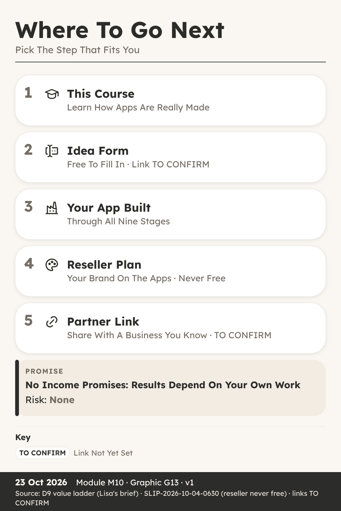
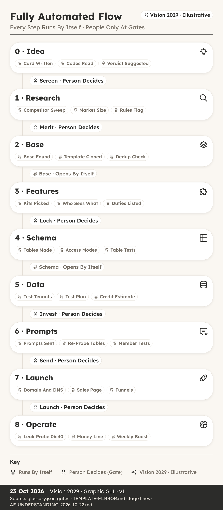
You can: fill in an idea form, using the fictional
Litterline as a worked example.
Key Ideas
- A Sticky Note And A Blank Form. Ava had followed
the whole course, and she had an app idea of her own written on a sticky
note by her desk.
- Four Doors Into The Factory. Every idea enters the
factory through one of four doors.
- Name First, Then The Brief. The form starts with a
short name: Litterline.
- Group 1: Businesses, Six Codes. Each code is a word
plus a number.
- Group 2: Who Signs In. ROLE (0-2) is 2, roles with
different access, so a breeder and their helper need not see the same
things.
- Groups 3 And 4: Customers, Public. CUST (0-5) is 3,
customers write, so puppy buyers can add to their records.
- Kill Check, Verdict, Data Role. In our worked
example all three are answered no, partly because licences renew, which
brings breeders back.
- Now Fill In Your Own. Take your own idea and write
a short name, then the three-part brief: what it is, who pays, and the
pain it removes.
Recap
- Brief Is Three Answers: What, Who Pays, Pain
- Six Codes Required, Fourteen May Say Not Yet Known
- No Kill Answer And SEN Below 2 Means PASS
Why It Matters: A Clear Form Gives Your Idea A Fair
Hearing
Quick Quiz
Which three answers make up the brief?
- Name, logo and colour
- What it is, who pays, and the pain
- Price, domain and funnel
- Tables, walls and tests
Litterline is TEN 3. What does level 3 mean?
- One business
- No data stored
- Several bodies
- One reseller above
How many of the 20 codes are required?
- Six
- Four
- Fourteen
- All 20
Litterline has no kill answers and SEN 1. Which verdict does the
engine suggest?
- KILL
- HOLD
- PASS
- RESHAPE
My Notes
________________________________________
________________________________________
Where To Go Next
You can: describe the Vision 2029 picture and the
honest next steps on the value ladder.
Vision 2029 · Illustrative
Key Ideas
- After The First Idea. Leah finished the course with
one idea form filled in, and she wanted to know what could come after a
single idea.
- Vision 2029, Illustrative. Everything in the next
two parts is Vision 2029, illustrative.
- A Morning In The 2029 Picture. The leak probe
reports All Clear across 18,240 tables.
- People Still Decide At Gates. Even in the vision,
automation does the checking and the carrying between gates, and a
person still decides at the human gates.
- What A Value Ladder Is. A value ladder is a set of
steps, where each step offers a little more help for the people who want
it, and nobody has to climb higher than suits them.
- Learn, Then Send An Idea. The course explains how
an idea becomes a live app: stages, rooms, gates, codes, bricks, walls
and tests, in plain words.
- Built, Then Resold Under A Brand. Step three is an
app built for you, through the same stages and gates.
- Partner Link And No Promises. Step five is a
partner link for the platform the factory builds on.
Recap
- Future Figures Are Always Vision 2029, Illustrative
- People Still Decide At The Human Gates
- A Reseller Brand Is Never On A Free Plan
Why It Matters: Honest Steps Matter More Than Big
Promises
Quick Quiz
What must every figure about the future carry in this course?
- A price
- The words Vision 2029, illustrative
- A leak test result
- A partner link
In the Vision 2029 picture, who decides at the human gates?
- Nobody, it is all automatic
- The building platform
- The first customer
- A person
Which plan can a reseller brand be on?
- Never a free plan
- Only the free plan
- Any plan typed into the web address
- No plan at all
What does the course promise about income?
- A fixed monthly amount
- Double your money in 90 days
- Nothing; results depend on your own work
- Earnings once you join
My Notes
________________________________________
________________________________________
Quiz Answers
- M00-L1 What An App Is Made Of: 1B · 2C · 3A ·
4D
- M00-L2 The Road, Rooms And Gates: 1C · 2B · 3D ·
4A
- M01-L1 The Idea Form: 1B · 2D · 3A · 4C
- M01-L2 The 20 Codes: 1C · 2A · 3D · 4B
- M01-L3 Kill Check, Verdict And Data Role: 1C · 2B ·
3D · 4A
- M02-L1 The Research Sweep: 1D · 2C · 3A · 4B
- M02-L2 The Merit Gate: 1C · 2D · 3A · 4B
- M03-L1 Picking A Base: 1B · 2A · 3C · 4D
- M03-L2 Bricks, Shelves And Kits: 1B · 2D · 3A ·
4C
- M04-L1 Choosing Kits And Bricks: 1B · 2A · 3D ·
4C
- M04-L2 Duties And The Lock Gate: 1C · 2A · 3D ·
4B
- M05-L1 How The System Makes The Tables: 1B · 2D ·
3A · 4C
- M05-L2 Walls And Table Tests: 1A · 2C · 3D ·
4B
- M06-L1 Test Identities And Test Tenants: 1B · 2D ·
3A · 4C
- M06-L2 The Leak And Tenant Tests: 1C · 2B · 3D ·
4A
- M07-L1 How Build Prompts Are Written: 1D · 2A · 3C
· 4B
- M07-L2 After Every Paid Turn: 1B · 2D · 3A ·
4C
- M08-L1 Sales Page, Domain And Funnels: 1C · 2A · 3D
· 4B
- M08-L2 The Launch Walk And Boosts: 1D · 2B · 3A ·
4C
- M09-L1 Watching A Live App Daily: 1C · 2B · 3A ·
4D
- M09-L2 The Money Line: 1B · 2C · 3A · 4D
- M09-L3 Rescue, Retire And Recycle: 1D · 2A · 3C ·
4B
- M10-L1 Filling In Your First Idea Form: 1B · 2D ·
3A · 4C
- M10-L2 Where To Go Next: 1B · 2D · 3A · 4C
Next Step
Fill in the Idea Form (TO CONFIRM). Resellers: A Reseller Brand Is
Never On A Free Plan. Partner link: TO CONFIRM (OverSkill partner
link).
No income promises. Results depend on your own work.